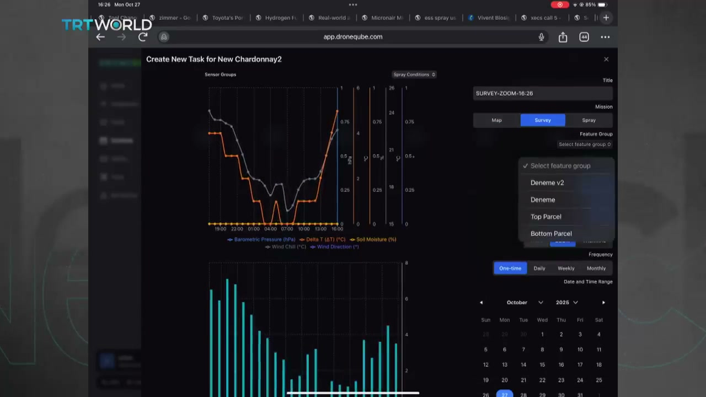
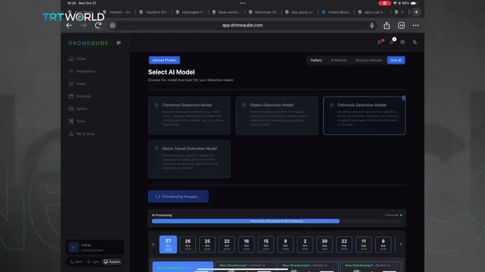
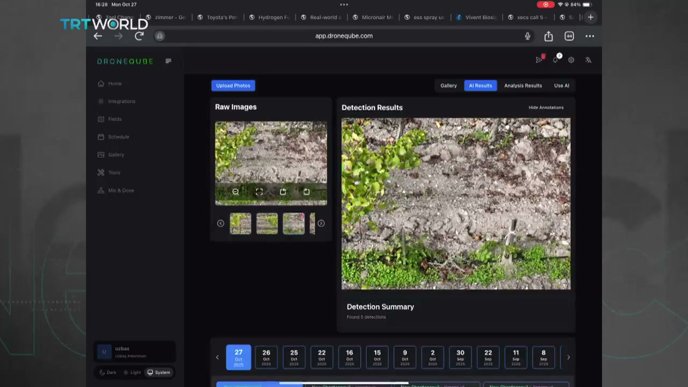
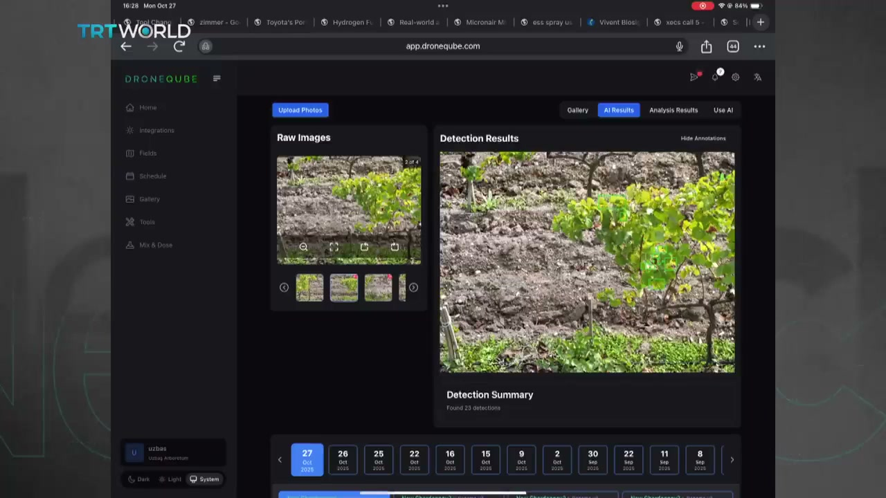
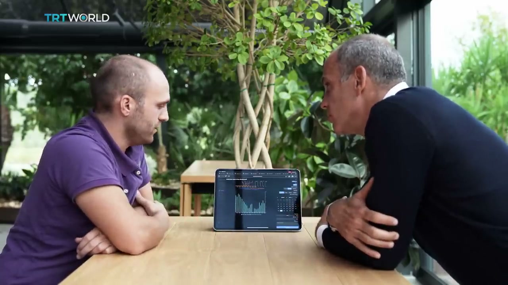

임무와 환경 조건의 분리
비행 계획은 기압·토양 수분·풍향 등 현장 조건과 함께 판단해야 하지만, 서로 다른 화면과 장비에 흩어지기 쉽습니다.
필드 선택과 임무 계획부터 드론 제어, 센서·기상 데이터, 촬영 이미지, AI 검출 결과까지 하나의 운영 흐름으로 통합했습니다.

TRT World NexTech 방송에 소개된 실제 관제 화면
농업 드론 운영자는 필드, 환경 센서, 임무 일정, 촬영 이미지와 AI 결과를 동시에 다뤄야 합니다. 핵심 과제는 기능을 많이 넣는 것이 아니라, 현장 작업의 순서를 끊지 않는 하나의 관제 경험을 만드는 것이었습니다.
비행 계획은 기압·토양 수분·풍향 등 현장 조건과 함께 판단해야 하지만, 서로 다른 화면과 장비에 흩어지기 쉽습니다.
촬영이 끝난 뒤 이미지를 별도 AI 도구로 옮기면 작업 이력과 결과의 맥락이 끊깁니다.
필드, 날짜, 임무, 촬영 이미지와 검출 결과를 한 작업 단위로 추적할 구조가 필요했습니다.
MainVerse에 참여한 3개국 6개 기관의 데이터와 기능 요구를 공통 제품 흐름으로 정리하고 설명 가능한 인터페이스로 구현해야 했습니다.
대상 구역과 센서 그룹을 선택하고 기압, Delta T, 토양 수분, 풍향을 함께 확인합니다.
Map, Survey, Spray 중 목적을 고르고 Feature Group과 세부 조건을 설정합니다.
일회·일·주·월 단위 일정을 만들고 MQTT 기반 드론 상태·명령 흐름과 연결합니다.
작업 목적에 맞는 모델을 선택하고 이미지 처리 진행 상태를 확인합니다.
원본 이미지와 Detection Result, 요약 수치를 같은 작업 이력 안에서 비교합니다.
프론트엔드는 복잡한 실시간 상태를 일관된 사용자 흐름으로 정리하고, API·메시징 계층은 장비와 분석 파이프라인의 차이를 흡수하도록 구성했습니다.
아래 이미지는 TRT World NexTech 방송의 15:35–17:03 구간에서 추출했습니다. 화면에서 직접 확인되는 기능만 설명에 사용했습니다.



